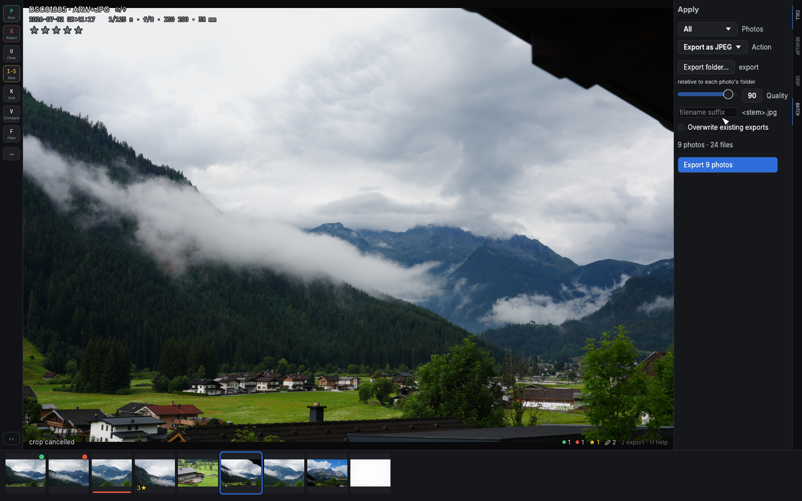
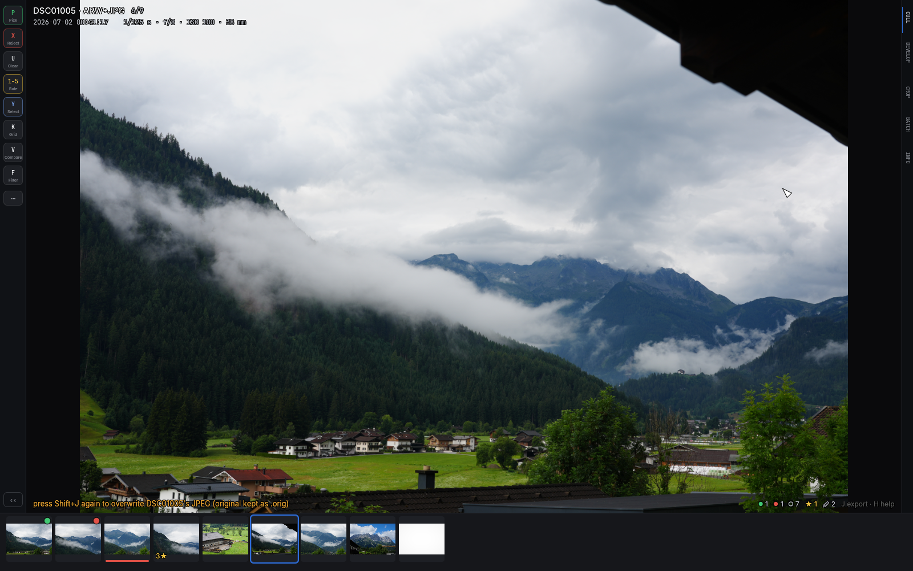
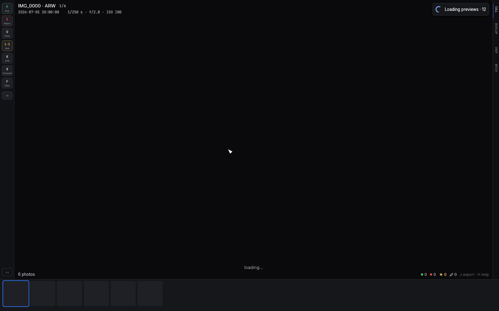

Batch operations and export
The apply panel: A
A opens the apply panel: pick a scope (Rejects, Picks, Unrated,
All but rejects — the survivors of a cull, everything you didn't
throw out — or All), an action, and run it. Every action treats
RAW + JPEG + sidecar as one unit — a moved photo takes its ratings
with it.
With a selection built, the scope menu leads with Selected (N) — the live count of exactly the photos you hand-picked, whatever the current filter shows (a caption notes any that are filtered out of view). The scope never switches itself: pick it deliberately. If the selection empties while the scope still points at it, the panel reads Selected (0) and the button waits — it never quietly falls back to a broader scope. After a copy, export or upload the selection stays put for the next action; trash and move clear it with the photos.
While you're in a pivot
(Shift+G — same day, camera, lens or moment) or have a
saved filter on (Cmd+F), the scope
menu also offers This view (N): exactly the photos on screen — a
pivot with any filter you narrowed to inside it, or the saved filter's
photos, named under the menu with what the filter means. That is how a
saved filter is batched: look at the photos first, then act on what you
see. The other scopes don't shrink to the view — under Rejects, Picks
and the rest the panel reminds you ("Rejects covers the whole library,
not this view"). The scope doesn't switch by itself in either direction:
if you leave the pivot or the saved filter with This view selected, it
reads This view (0) and the button waits.

The actions adapt to the active source:
- Local folders: Copy to folder, Move to folder, Delete to trash (arm/confirm — the button asks for a second click), Export as JPEG, and Upload to Immich when a server is configured.
- Immich sources: Download to folder (each photo lands with a sidecar
carrying your edits), Archive on server, Delete to trash on the
server (same two-click confirm), Save edits to server — the
multi-photo
J, described below — and Discard unsaved edits, its inverse (below). Inside an album, Delete to trash still deletes the photos from the server — not just from the album — and the panel says so under the action; taking photos out of an album isShift+I.
Upload to Immich sends RAW+JPEG pairs (stacked on the server with the JPEG as the stack cover, sidecar included so ratings import) and offers two destinations: a Server — with one Immich server configured it's pre-selected and inert; with several, the upload waits until you pick one (there is deliberately no silent default, and the completion summary names the server it went to) — and an Album. The album default, No album (timeline only), is plain upload; choosing an album adds each photo to it once — the JPEG; the RAW stays behind it in the stack, so the album doesn't show every photo twice — and the summary names it, counting what the server actually added: "· added to 'Iceland'" when every photo went in, "· 2 added to 'Iceland', 1 already in it" when some were there already, "· already in 'Iceland'" on a re-run. Album choices are per-server: switching the Server resets the Album. If the album list can't be fetched, the panel says so (with a Retry button) instead of loading forever, and uploading to the timeline keeps working regardless.
Re-uploading is always safe — and since the checksum check landed, cheap: before any bytes move, culler asks the server which files it already holds (by content, not by name), and those are verified and skipped without re-sending anything. A re-run of a mostly-finished batch flies through in seconds, only actually transferring what's missing. While that check runs the counter reads Verifying instead of Uploading. When part of a pair was uploaded before — say the RAW is already up and sitting in a stack — the new upload joins that existing stack (newest JPEG in front) instead of creating a second one. Re-running a batch that already finished changes nothing.
One honest edge: if a photo's exact bytes already sit in the server's trash, the server reports it as a duplicate but leaves it trashed — uploading can't restore it, and culler can't either. That photo counts as uploaded with a warning naming the state; restore it in Immich's web UI to make it visible. It also never counts toward the trash-originals offer below — a copy in a trash that auto-empties is not a safe copy.
If the photos upload fine but the pair can't be stacked or the album
add fails, that's reported as a warning on an uploaded photo, never
as a failed upload. The common cause for the stack case is an API key
minted before stacking shipped — add the stack.create permission to
the key (or mint a fresh one) and re-run the upload: already-stored
photos are verified and skipped, and only the stacks are created. For
the album case the warning says why: a key without the permission is
told which one ("the API key lacks the albumAsset.create permission"),
an album deleted since you picked it reads "that album no longer
exists, or you don't have access to it", and a photo the server won't
accept into the album reads "no permission to add this photo" — in
every case the photo itself is uploaded, just not in the album.
Before you click, the scope line shows what the batch weighs — "22 photos · 45 files · 1.18 GB". While it runs the panel shows a live "Uploading · N of M" count and a Cancel button; the bar under them fills by bytes, not photo count, so a batch of big RAWs can't paint itself half-done while most of the data is still queued. Right under the bar a line gives the time — "1:50 elapsed" on the left, "about 5 min left" on the right (more on that estimate below). Under it, one line tracks what's left — "838 MB left · 3.1 MB/s" — and a small speed graph draws the transfer rate in five-second bars over the last two minutes. Each bar is a fixed five seconds of the batch: once a bar is complete it never changes, the row steps left one bar at a time, and the lighter rightmost bar is the five seconds in progress, drawn at its current speed. The caption at the right of the "left" line — "up to 20 MB/s" — is what a full-height bar means; it only ever steps up during a batch, so the same height always means the same speed. The speed beside "MB left" is the batch's own, averaged over the last ten seconds, so it stays put between files. The graph has no warning colors on purpose: bars shrinking to the baseline IS what a stall looks like, and bars coming back is recovery. Cancel finishes the photo in flight, then stops — no half-uploaded pair — and the summary says what happened ("Cancelled — 12 of 37 uploaded"). A cancelled upload is safe to re-run; already-sent photos verify and skip. (Archive and server-trash are single server calls — nothing to count or cancel, they just show a spinner.)
The time line has two halves that mean different things. Elapsed is a measurement: a clock that starts when you click and never pauses — not for the checksum check, a slow file or a pending Cancel — and a retry starts it again from zero. Time left is an estimate: the bytes still to send divided by the speed of the last minute. It is worded only as precisely as it can be trusted — "almost done", "less than a minute left", then whole minutes, five-minute steps past ten minutes, quarter hours past an hour ("about 1 h 15 min left"), whole hours past six, and finally "more than a day left". Between corrections it simply counts down; it corrects itself only once the speed has clearly changed for several seconds, which means it can step up after the connection slows. Text that sits still for a few minutes is what "about" looks like — the elapsed clock beside it shows the upload is alive. The speed on the "MB left" line covers the last ten seconds and the estimate the last minute, so the two won't always divide out exactly.
The right half of that line is simply blank when there is nothing honest to say — no placeholder:
- for the first fifteen seconds of real uploading (and until 4 MB has been sent), so a batch of a few small photos finishes without ever showing one;
- while a file has stopped moving — the same moment its own line turns amber (see below); the estimate comes back, freshly worked out, when bytes move again;
- after you press Cancel, because the remaining photos won't be sent.
Photos the server already has are skipped in an instant: they shrink what's left, but their time isn't counted as upload speed. A re-run of a mostly-uploaded batch therefore shows its estimate only after fifteen seconds of actual sending, and tends to err on the long side.
Big files never look stalled: once a file has been on the wire for
half a second, a second line appears under the batch readout with the
file's name, its byte progress and the current speed — "DSC08551.ARW ·
34.2 of 118.4 MB · 3.1 MB/s" — plus its own thin bar. When the last
byte is sent the line says finishing… while the server checks the
file in (normal, can take a few seconds); if bytes genuinely stop
moving mid-transfer the line turns amber and says so plainly ("no
movement for 8s") — a statement of fact, not a failure: a transfer
that never recovers ends as that photo's error and the batch moves on.
Cancelling mid-file adds "finishing, then stopping", because the
current photo always completes. The same readout follows the batch
into the corner pill's hover panel (which also carries the "MB left"
line, with the time left added while there is an estimate — "838 MB
left · 3.1 MB/s · about 5 min left"), and a single J upload to a
server shows the per-file line too (one photo has no elapsed clock or
estimate).
A batch that ran for ten seconds or more says how long it took, right after the destination — "22 photos uploaded to prd in 14 min", or "in 42s", or "in 1 h 5 min". Quicker batches read as they always did, and a cancelled batch names no total.
When a batch ends with failures, the summary names the photos — "20 photos uploaded to prd — 2 failed: DSC07717, DSC07803 (timed out waiting for a response)" — and hovering it shows the full technical error. The primary button becomes Retry 2 failed…: one click re-runs the batch, the stored photos verify and skip in moments, and only the failures actually re-send. A clean retry ends with every photo verified — "22 photos uploaded · 20 already stored" — and the trash-originals offer appears as if the batch had succeeded the first time. Changing any selector (photos, action, server, album) retires the Retry button; the plain Upload button does the same thing anyway, just without the count.
Uploading copies: your local files stay. When every photo in the batch is verified stored on the server — nothing failed, nothing cancelled — a second, separate offer appears under the summary: Trash N originals…. It is never automatic and never part of the upload itself. Click it once to arm, and it tells you exactly what will happen: originals go to the system Trash (recoverable there if you change your mind), and the server re-verifies every photo the moment you confirm — not at upload time, now. Click again to commit; a brief "Verifying" precedes the trashing, then the pair and its sidecar leave the folder together, with the same live progress and Cancel as any batch.
That last-second check is what makes the offer safe to trust. Before anything is trashed, culler asks the server — the one that actually took the uploads, even if you've browsed the server selector since — whether it still holds every photo's exact bytes, visible in its library. A photo whose server copy was deleted or moved to the server's trash in the meantime is kept on disk and the summary says so ("1 kept — no longer verified"): a copy in a trash that auto-empties is not a safe copy. And if the server can't be reached at all, nothing is trashed — "couldn't verify" never silently falls back to trusting the upload-time answer.
The offer is deliberately cautious. It only ever acts on the batch you just watched finish — close the panel, switch sources, or start anything else and it's gone (re-running the upload brings it back in seconds; already-stored photos are verified without storing anything twice). A photo whose file changed on disk between the upload and your click is skipped, never trashed. And if any upload failed, there is no offer at all — the Retry button is the path back to one.
Sorting into folders: Shift+D
The apply panel moves whole scopes at once. For a sort pass — "this one to Family, that one to Portfolio, the next one to Family again" — pin up to nine folders and send photos with the number keys as you go.
Pinning. With Copy to folder or Move to folder chosen in the
apply panel (A), a Sort destinations card sits under the
Destination card. Add folder… pins a folder on the next free digit;
Pin destination pins the folder you already picked with
Destination…. Each row shows its digit, the folder's name and path,
a Move | Copy switch (new folders start on Move), arrows to reorder
and × to unpin — unpinning never touches the folder. The digit is
the row's position: move a folder up and its number changes with it.
The list is yours across every folder you open (it lives in
~/.culler/destinations.conf).
Sorting. Shift+D turns on sort mode in the loupe or the Grid:
a blue [sort] tag joins the photo's overlay (the Grid's header in the
Grid), and the left rail swaps its buttons for your nine folders — the
digit, the folder's name under it, its full path when you point at it,
and a Done button. While it's on, 1–9 send the photo to that
folder instead of rating or labelling it; P, X, U, the arrows and
selection keep working. With a selection
built and the cursor on one of its photos, the whole selection goes —
the same rule marking follows. Shift+D, Esc or Done leaves sort
mode; opening Compare, Survey, Match series, crop or the sources pane
leaves it too, since those use the digits themselves.
- Copy happens at once; the photo stays where it is.
- Move asks once per folder per session: the first press says "press 1 again to move this photo to Family", the second press moves it, and from then on that folder takes photos without asking. Any other key in between cancels the question. The moved photo leaves the view and the next one slides into its place.
Every send takes the whole photo — RAW, JPEG and sidecar together — and the status line confirms it: "Moved DSC07296 → Family (3 files)". Presses queue up and run one at a time (the corner pill reads "Moving 2 of 5 · Family" while a run is going), so you can keep sorting while the previous photo is still moving; pressing a digit again on a photo that's already on its way does nothing.
It refuses rather than guesses:
- A folder already holding a file of the same name keeps its file, and your photo stays where it was: "DSC07297 already in Family".
- A folder that can't be reached — an unmounted card or drive, whose parent folder is missing — is shown in amber on the card and on the rail, and sending to it changes nothing (culler never recreates a missing drive's folders on your boot disk).
- A photo that already lives in the folder isn't sent there again.
- A folder inside the one you're culling gets a caption: sorted photos would reappear when you rescan.
Sort destinations are folders, so sort mode is for folder sources; on
an Immich source Shift+D points you at the album picker (Shift+I)
instead. It's also off inside a stack and during a live tether session.
There is no undo for a move (Cmd/Ctrl+Z undoes edits, not files) —
the files are in the destination folder, moved back by hand if needed.
Sort mode never survives a restart; the pinned folders do.
Save edits to server
On an Immich source, Save edits to server is the batch form of the
single J: every photo in the scope
whose develop or crop hasn't been saved yet is rendered, uploaded as its
stack cover and has its grade saved to the server — landmark points
riding along — one photo at a time, exactly as pressing J on each
would. It is the way to clear the "12 unsaved" count in the corner
in one go. A photo whose only change is its landmark points isn't
unsaved, so it isn't rendered just to carry them (why).
The scope menu gains one entry under this action only: Unsaved — just the photos that need saving — listed first but never picked for you; the usual scopes (Picks, All, a selection as Selected (N) — "save these") work too, and then only the unsaved photos among them are touched. Photos already saved are skipped without comment, so the button always says what will really happen: "Save 2 edits". There is no confirm click — nothing is destroyed, and a batch you re-run finds only what is still unsaved.
One class of photo is skipped on purpose and named above the button:
a photo already fronting a culler edit for which no grade and no crop
are loaded — the state J's own safety catch
arms on. A batch never re-renders such a photo plain over its edit; the
caption says how many it is leaving alone ("1 of these has no grade or
crop loaded — it'll be skipped (open it and press J twice to bake it
plain on purpose)"), and the summary repeats it ("· 1 skipped (no grade
loaded)"). On a large library that loads in windows,
a batch can only reach the photos that are loaded; the caption states
the shortfall ("3 more unsaved photos are outside the loaded part of
the library — load more to reach them") and the summary says so again
afterwards.
While it runs, the panel and the pill read
"Saving · 4 of 12" with the current photo's phase beneath —
"Downloading RAW · name", "Rendering · name", "Uploading · name" — and
Cancel stops after the photo in flight (that one is saved; the rest
stay unsaved for next time). Under the bar the same elapsed clock
runs as during an upload ("3:12 elapsed"), but with no time-left
estimate: each photo is a download, a render and an upload whose size
isn't known until it has been rendered, so there is nothing honest to
divide. A save that took ten seconds or more names its total like an
upload does ("12 photos saved to prd in 3 min"). The summary uses the
upload grammar:
"12 photos saved to prd", or "10 photos saved to prd — 2 failed:
DSC07717, DSC07803 (couldn't download the RAW)" with the primary button
turning into Retry 2 failed… — a re-run that only touches what is
still unsaved. A photo whose render came out identical to the cover it
already had is a note, not a failure ("unchanged render"); a photo whose
grade couldn't be saved after its render uploaded counts as a warning
and keeps its [unsaved] tag for a retry. A batch save and a single
J never run at once — each tells you the other is still going.
Discard edits
The inverse of Save edits. On an Immich source, Discard unsaved edits
reverts each photo in the scope to the last state you saved to the server
— grade, crop, alignment and snapshots all at once — without uploading
anything. Its button wears the same red as Trash (it throws away unsaved
work), but there is no confirm click: each photo's discard is a single
Cmd+Z on that photo from coming back, exactly like an edit (the grade
and the crop come back; snapshots and alignment points made since the
last save do not).
The scope works like Save edits: Unsaved is offered first (the photos
that have something to discard), and a selection,
This view inside a pivot, or any filter works too. A photo whose
edits culler hasn't yet checked against the server — or is reading back
at that very moment — is skipped and named — "1 of these hasn't been
checked against the server yet — it'll be skipped (open it and wait a
moment, or run again after the check finishes)" — because reverting it
would be guessing at what the server holds. Already-saved photos are skipped
silently, so the button says exactly what will happen: "Discard 2
edits". The summary reads "2 photos discarded — 1 skipped (not yet
checked)". Discard won't run while a save (J or a batch) is still going,
so a completing upload can't quietly bring an edit back.
To discard one photo, use the per-photo Discard edits entry (the
develop pane, the ⋯ More menu, or the DEVELOP / CROP tab palettes)
— see Develop. It
always acts on the photo you are looking at, selection or not; a set is
the batch's job (Scope: Selected).
Single export: J — and overwrite: Shift+J
J renders the current photo's edits (tone + crop) at full resolution
through the same GPU pipeline that draws the screen and writes a JPEG
using the export preset (folder, filename suffix, quality, overwrite
policy). Which file it renders from follows one rule — your grade
decides:
- Not graded — no develop slider moved (a crop on its own is not a grade): the export is the camera JPEG with your crop, exactly the picture you looked at while culling.
- Graded, and the photo has a RAW file: the export comes from a fresh full-resolution demosaic of the RAW (color, lens correction and your white balance included), exactly like the develop panel shows it — the grade was made on the RAW, so that is what gets baked.
- A RAW with no camera JPEG beside it always exports from the RAW; a photo without a RAW always exports from its JPEG.
Having the develop panel open doesn't change the rule: with the panel
showing the flat RAW of a photo you haven't graded, J still exports
the camera JPEG, and the status line says so. Move any slider and the
next J renders from the RAW. Edit the
folder, filename suffix and overwrite policy in the apply panel under
Export as JPEG; everything persists between runs. The Quality
slider sits in its own JPEG Quality card near the top of the same
panel — visible on every source and under every action, because it
governs every JPEG culler encodes: folder exports, Shift+J overwrites
and J uploads to a server alike (the card says so in place). The same
value is JPEG quality in Settings
(Cmd+, → Develop & export) — change it in either place. The
default of 95 with full-resolution
color (no chroma subsampling) lands in the same size and fidelity class
as the camera's own JPEGs; raise or lower it once and it's remembered.
Exports keep the camera's EXIF (MakerNotes intact), with
orientation and pixel dimensions corrected for your crop.
Shift+J replaces the paired camera JPEG in place with the rendered
edit — the one destructive file operation in the app. It asks for a
second press and keeps the original as <name>.JPG.orig. If a
.orig file already exists but is damaged or unreadable — a leftover
from an interrupted run, or an unrelated file that happens to share the
name — culler refuses the overwrite and tells you, rather than replacing
your original with no good backup; remove that .orig and try again.
It renders by the same rule as J: an ungraded RAW-paired photo
bakes its own camera JPEG with the crop, a graded one bakes the RAW.
What happens
to your settings afterwards depends on what they were grading: a photo
developed on its JPEG has its develop and crop reset — those edits
are baked into the very pixels the sliders acted on, and left up they
would apply twice. A graded RAW-paired photo keeps its develop
sliders: they grade the RAW, which the overwrite never touches, so
reopening the develop panel shows the exact grade that produced the new
JPEG. The crop resets in every case — the new JPEG is already cropped.

Edit uploads on a server source
On an Immich source, J downloads the original, renders your edit
locally and uploads it, choosing the original by the same rule as a
local J: a photo you haven't graded uploads its camera JPEG with
your crop — what you saw while culling — while a graded one gets the
full demosaic of its RAW (a RAW original, or the RAW behind a RAW+JPEG
pair), exactly what the develop panel shows.
The edit is always stacked with its original: a photo that wasn't in
a stack founds a new one (edit on top, original behind it), and inside
an existing stack the edit becomes the new
stack cover — either way the server timeline shows your version
fronting the original. Re-rendering the same photo replaces culler's
previous version (it goes to the server trash) — the camera originals
are never touched, and the stack never accumulates old renders. The new
render also joins every album the photo belongs to, so albums keep
showing the photo, fronted by the newest version. The photo in front of
you follows immediately: the thumbnail and the full view swap to the
uploaded render and the stack badge reflects the new grouping — no
rescan needed. (Since the render already carries your grade, reopening
develop shows it plainly while the RAW downloads, then switches to the
live RAW rendition.) The upload renders at the JPEG Quality card's
value — press A (or open Settings with Cmd+,) to see or change it,
on a server source too, no batch action needed. The edit carries the original's metadata: camera,
lens, exposure, GPS and the local capture time ride along even when the
original is a format culler can't decode itself (an iPhone HEIC, say),
so the server's Info panel reads the same on both. From an
album view, the edit also joins that album. Only
one export/upload runs at a time — a second J tells you one is already
running and points at the pill.
A re-render — J on a photo whose front is already a culler edit —
bakes from the RAW, so it needs it: if the RAW can't be
downloaded or decoded, the J stops with the cause in the status line
and nothing is uploaded — culler never quietly re-uploads the
previous version as if it were your new edit. That holds even when the
photo has no grade (say you only changed its crop): culler can't yet
reach the camera JPEG inside the stack, so such a re-render comes from
the RAW without the camera's look, and the status line — or, for
Save edits, the batch summary's warnings — says so ("rendered from
the RAW: no grade, and the camera JPEG isn't reachable from this
stack"). If you want a look on it, grade the photo before the J.
Big originals get the
same generous download time budget uploads have, so a slow connection
means a longer wait, not a failure — and the
pending-work pill tells you which wait it is:
"Downloading RAW · name" while the original comes down (hover for
the file, the megabytes so far of the total and the speed — the same
readout uploads have, amber after five seconds without movement; a
camera JPEG reads "Downloading · name"),
"Rendering · name" while it develops, then "Uploading · name"
with the upload's own byte count. A RAW culler already fetched (for the
develop panel, say) skips the download step entirely.
One more safety catch on a photo that already fronts a culler edit:
if no grade and no crop are loaded for it — the state a photo is
in when culler couldn't read its saved edit back from the server —
J would replace that edit with a plain, uncropped render of the RAW.
So the first J only arms, with the status line naming the photo
and the consequence ("press J again to do that"); a second J runs it,
any other key stands it down. The same catch applies to J on a
member row inside a stack: that re-renders
the member's own state, not the cover's. If you meant to bake your
edits and the arm appears instead, don't confirm — the grade didn't
load; step away and back to the photo to re-read it, and check the
diagnostic log.
The grade itself (sliders, crop, history) is saved to the server with
the render. When that save fails the status line says so on every
upload until you restart culler — the photo keeps its [unsaved] tag,
and the grade stays safe in culler's own state file meanwhile, so the
next J after a restart still bakes what you see.
The pending-work pill
Anything running in the background shows in a small pill at the
top-right: a batch with its live count ("Uploading · 12 of 37") right
in the collapsed label, syncing ratings, a scan with its running total,
an export by name, a stack loading, previews downloading. A J on a
server photo names its phase — "Downloading RAW · name", "Rendering ·
name", "Uploading · name" — so a long wait always says what it is
waiting on. Hover it for the full list (a transfer's row adds the file,
its bytes of the total and the speed) — and while a cancellable batch
runs, its row in that list carries a ✕ that stops the batch after
the current photo (the same cancel as the batch panel's button, for
when the panel is closed).
The pill exists to explain two things: why the app might feel slow
right now (the wait is on the wire, not in the app), and why an action
was just refused — a blocked keypress flashes the pill to point at the
operation in its way. A failing sync shows here too, in amber, with the
server's error; it keeps retrying on its own. When nothing is pending,
the pill doesn't exist.
